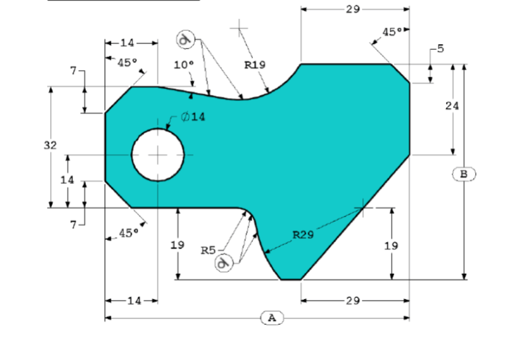
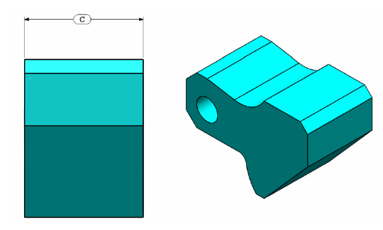
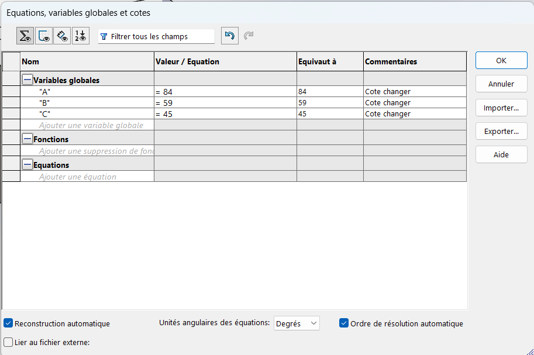
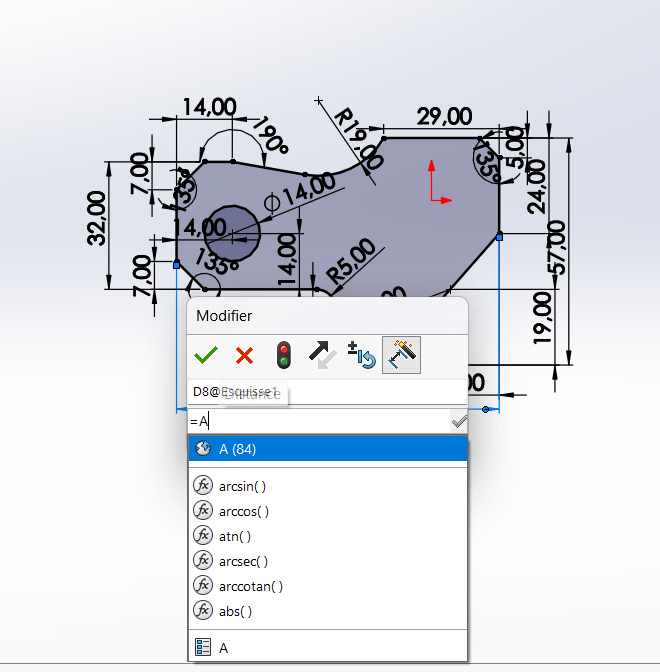
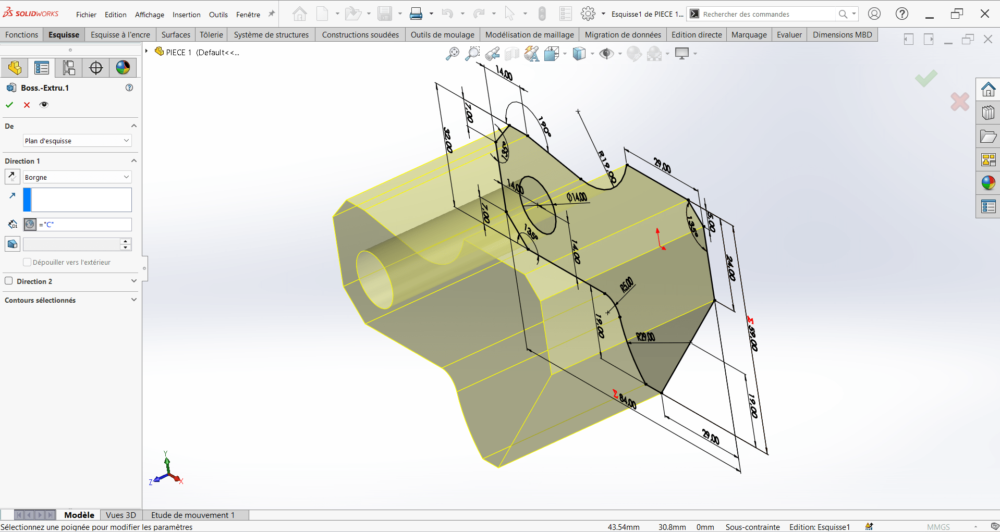
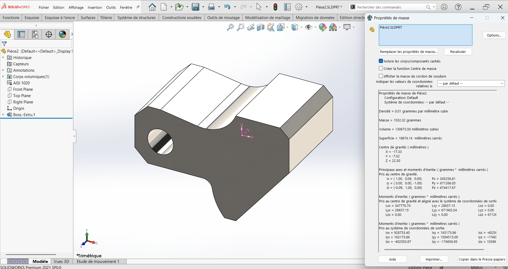
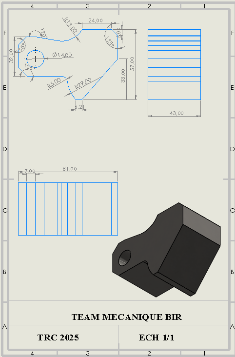

PIÈCE 2¶
PIÈCE 2¶
I. PRESENTATION DE LA PIECE¶
Nom de la pièce : Pièce 2 Système d'unité : MMGS (millimètre, gramme, seconde) Matériau : Acier AISI 1020 Densité : 0,0079 g/mm³ Tolérance : ± 1 % Décimales : 2 (toutes les dimensions seront arrondies à 2 décimales) Paramètres géométriques : - A = 84.00 mm - B = 59.00 mm - C = 45.00 mm Descriptions
Pour répondre aux exigences du test et évaluer l’impact des variations dimensionnelles sur la masse de la pièce, il est nécessaire de modifier précisément les paramètres géométriques A, B et C tout en conservant la structure de la pièce initiale. Cette démarche garantit une mise à jour rigoureuse de la conception tout en facilitant la comparaison des résultats obtenus.
Capture d'ecran


II. GAMME DE RÉALISATION DE LA PIÈCE 2¶
A ce niveau, nous n’avions qu’à ouvrir le fichier et modifier les paramètres A,B et C.
III. REALISATION¶
Étape 1 : Changement des paramètres¶
Ouvrir le fichier de la pièce créée avec les dimensions A = 81 mm, B = 57 mm, C = 43 mm. Aller dans le parametrage, equation et changer A,B et C en les dimenssions A = 84 mm, B = 57 mm, C = 43 mm.

Modifier les cotations : - Clique sur Outils (Tools) > Équations (Equations). La boîte de dialogue Équations, variables globales et cotes s’ouvre. - Cliquer sur chaque cote correspondant aux paramètres A, B et C. - Changer la valeur : - A = 84.00 mm - B = 59.00 mm - C = 45.00 mm
  - Valider chaque modification. - Vérifier la mise à jour de la pièce : - Observer que la géométrie s’adapte aux nouvelles dimensions. - Contrôler que la pièce reste conforme (formes fermées, sans erreurs).Étape 2 : Évaluer la masse de la pièce modifiée¶
- Vérifier que le matériau est appliqué.
-
Aller dans l’onglet Évaluer → Propriétés de masse. Noter la masse en grammes.
-
Enregistrer la pièce modifiée : Enregistrer sous un nouveau fichier (comme Piece2) afin de garder une trace des différentes versions.

Étape 3 : Contrôle qualité¶
- Effectuer une revue des dimensions sur le modèle 3D.
Étape 4 : Contrôle qualité (final)¶
- S’assurer que toutes les modifications sont conformes au cahier des charges et que le modèle 3D est correct.
Étape 4 :Mise en page.¶
